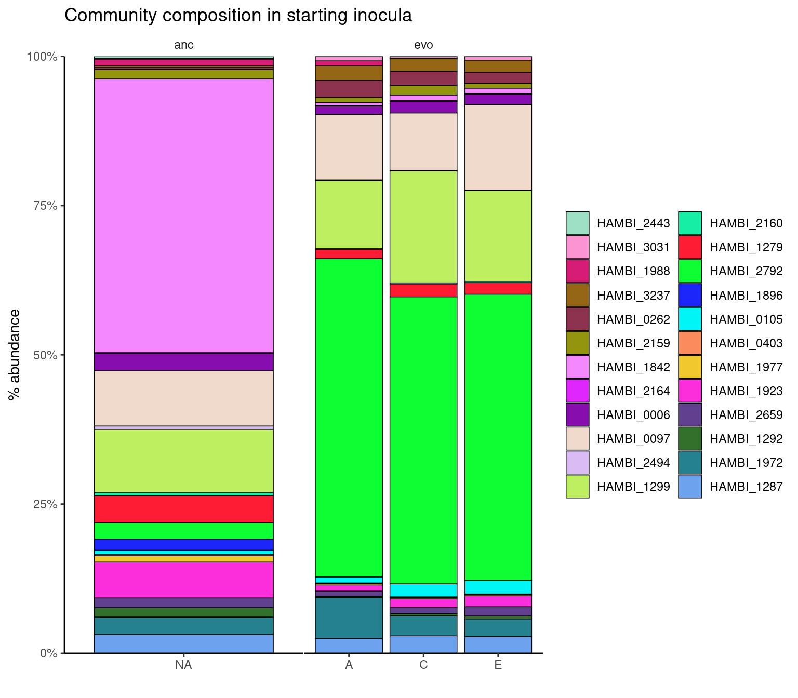
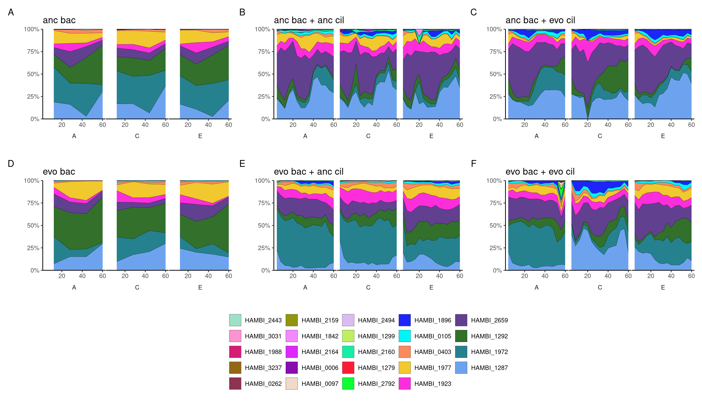
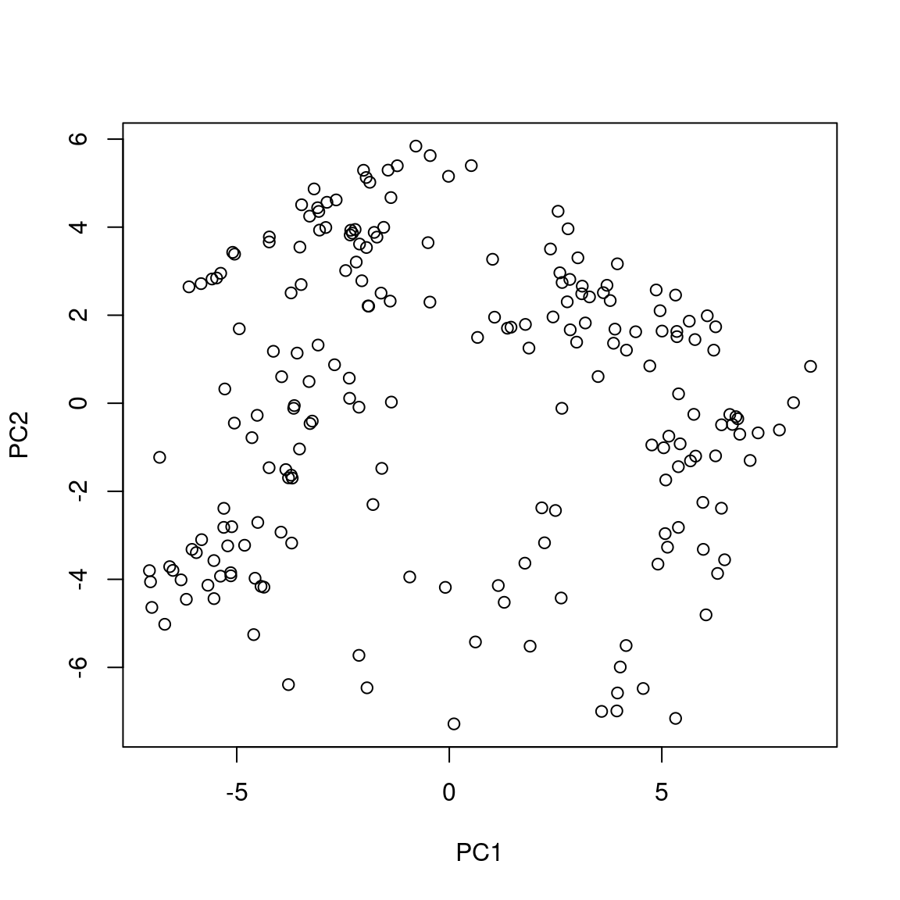
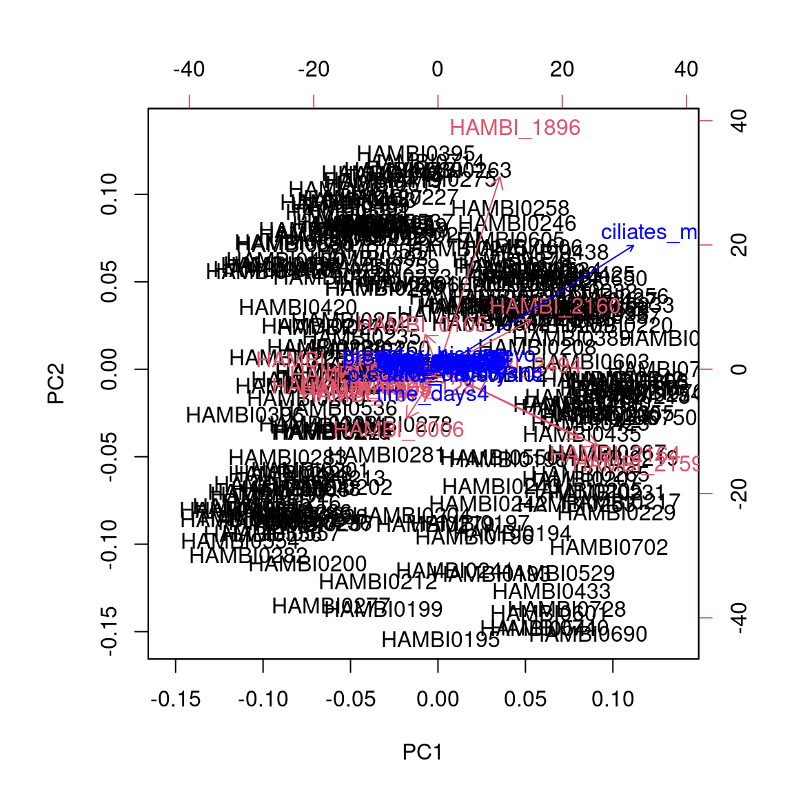
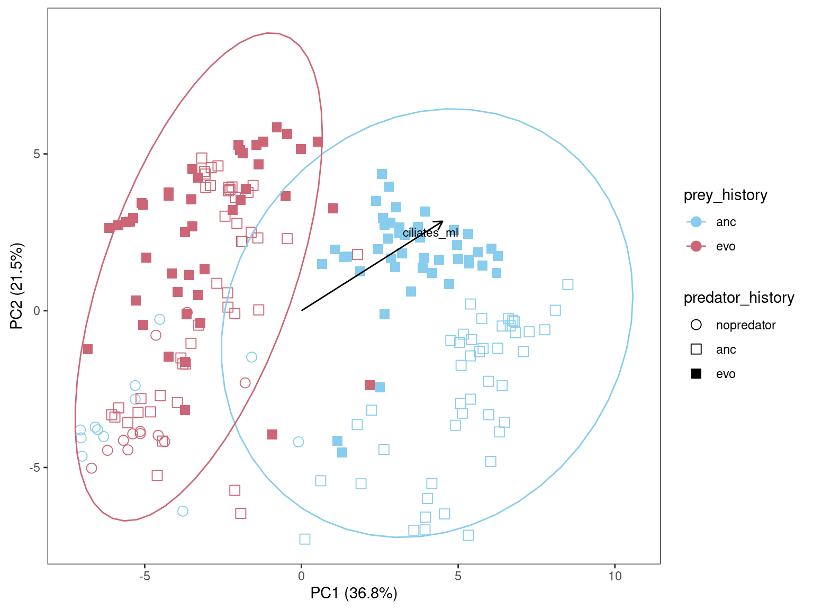
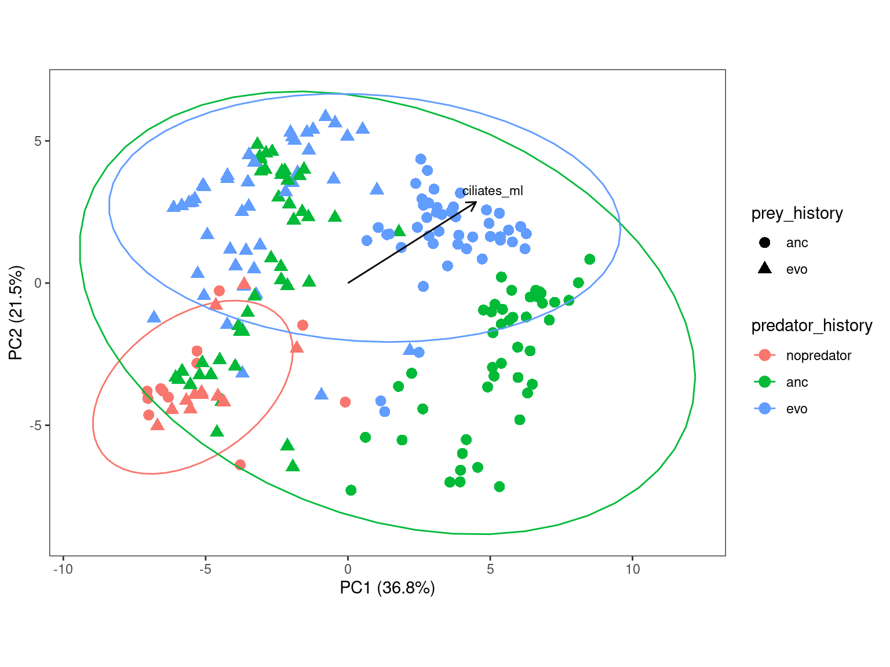
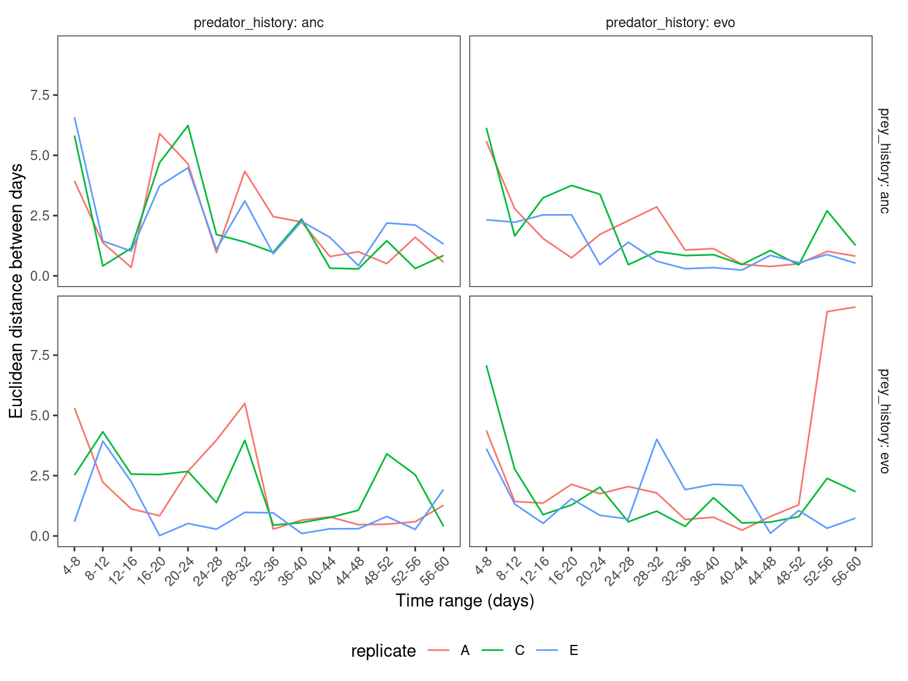

Analysis of community composition
1 Setup
Libraries and global variables
Set up some directories
1.1 Some functions
Show/hide code
myarplot <- function(.data){
cil <- unique(.data$predator_history)
bac <- unique(.data$prey_history)
mytitle <- case_when(cil == "anc" & bac == "anc" ~ "anc bac + anc cil",
cil == "anc" & bac == "evo" ~ "evo bac + anc cil",
cil == "evo" & bac == "anc" ~ "anc bac + evo cil",
cil == "evo" & bac == "evo" ~ "evo bac + evo cil",
cil == "nopredator" & bac == "anc" ~ "anc bac",
cil == "nopredator" & bac == "evo" ~ "evo bac",
#cil == "nopredator" & bac == "evo" ~ "starting anc bac",
#cil == "nopredator" & bac == "evo" ~ "starting evo bac"
)
ggplot(.data) +
geom_area(aes(x=time_days, y=f, fill=strainID),
color="black", size=0.1) +
facet_wrap( ~ replicate, strip.position = "bottom") +
scale_fill_manual(values = hambi_colors) +
scale_y_continuous(limits = c(0,1), expand = c(0, 0), labels = scales::percent) +
scale_x_continuous(limits = c(4,60), breaks = c(20, 40, 60)) +
labs(x="", y="", fill="", title=mytitle) +
theme_bw() +
myartheme()
}
myartheme <- function(...){
theme(
panel.spacing.x = unit(0.05,"line"),
strip.placement = 'outside',
strip.background.x = element_blank(),
panel.grid = element_blank(),
panel.border = element_blank(),
panel.background = element_blank(),
#axis.text.x = element_blank(),
axis.line.x = element_line(color = "black"),
axis.line.y = element_line(color = "black"),
legend.title = element_blank(),
legend.background = element_blank(),
legend.key = element_blank(),
...)
}
strain.order <- c("HAMBI_2443", "HAMBI_3031", "HAMBI_1988", "HAMBI_3237", "HAMBI_0262",
"HAMBI_2159", "HAMBI_1842", "HAMBI_2164", "HAMBI_0006", "HAMBI_0097",
"HAMBI_2494", "HAMBI_1299", "HAMBI_2160", "HAMBI_1279", "HAMBI_2792",
"HAMBI_1896", "HAMBI_0105", "HAMBI_0403", "HAMBI_1977", "HAMBI_1923",
"HAMBI_2659", "HAMBI_1292", "HAMBI_1972", "HAMBI_1287")Read data
2 Plot Community Composition
community composition of the initial conditions
Show/hide code
pinit <- counts_f %>%
mutate(strainID=factor(strainID, levels=strain.order)) %>%
filter(str_detect(condition_prey_pred, "inoculum")) %>%
ggplot() +
geom_bar(aes(y = f, x=replicate, fill = strainID),
color="black", size=0.25, stat="identity") +
facet_grid(~ prey_history, scales="free_x") +
scale_fill_manual(values = hambi_colors) +
scale_y_continuous(limits = c(0,1), expand = c(0, 0), labels = scales::percent) +
labs(x="", y="% abundance", fill="", title="Community composition in starting inocula") +
theme_bw() +
myartheme()Warning: Using `size` aesthetic for lines was deprecated in ggplot2 3.4.0.
ℹ Please use `linewidth` instead.
Plot community compositions during the experiment
Show/hide code
phi <- counts_f %>%
mutate(strainID=factor(strainID, levels=strain.order),
time_days = as.numeric(as.character(time_days))) %>%
filter(!is.na(time_days)) %>%
group_by(prey_history, predator_history) %>%
group_split() %>%
map(myarplot) %>%
wrap_plots(., ncol = 3) +
plot_layout(guides = 'collect') +
plot_annotation(tag_levels = 'A') &
theme(legend.position = 'bottom')
3 Ordination of community composition
Need some additional libraries here
3.1 Transform data
zCompositions has problems with species with < 2 observations so we need to filter these out
Here we remove strains present in < 50 samples across transfer categories and present in < 20 samples in at least 2/3 transfer categories
transform to matrix
Show/hide code
mymat <- counts_f %>%
filter(!is.na(count)) %>%
filter(strainID %nin% lowstrainsv) %>%
filter(!str_detect(condition_prey_pred, "inoculum")) %>%
dplyr::select(sample, strainID, count) %>%
# important to arrange by sample as this makes some later joins easier
arrange(sample) %>%
pivot_wider(names_from = "strainID", values_from = "count") %>%
column_to_rownames(var = "sample") %>%
data.frame()3.2 Replace zeros
Compositional analysis with the centered log-ratio can’t handle zero values. Some people just replace them with a pseudocount. Another way is to impute them based on various different strategies.
Literature:
- A field guide for the compositional analysis of any-omics data
- zCompositions — R package for multivariate imputation of left-censored data under a compositional approach
Here we will uses a Geometric Bayesian-multiplicative replacement strategy that preserves the ratios between the non-zero components. The “prop” option returns relative abundances.
3.3 Calculate Bray-curtis dissimilarity
3.4 Calculate with Aitchison distance
Aitchison distance is the Euclidean distance of the centered log-ratio transform (clr). This distance (unlike Euclidean distance on read counts) has scale invariance, perturbation invariance, permutation invariance and sub-compositional dominance.
3.5 Compare Aitchison distance with CLR
When the Aitchison distance is used in Principle co-ordinate Analysis (PCoA) it is equivalent to standard Principle Component Analyis (PCA) on the clr transformed data
For example, these ordinations are the same, just that Axis2 is the mirrorimage between. Since the rotation is arbitrary this does not matter.

3.6 Environment vectors
left_join with metadata
About 85% of variance explained in first 5 PCs
Show/hide code
Environmental/experimental variables associated with ordinatoion

3.6.1 Significance of the environmental covariates
***VECTORS
PC1 PC2 r2 Pr(>r)
ciliates_ml 0.84491 0.53492 0.1262 0.001 ***
---
Signif. codes: 0 '***' 0.001 '**' 0.01 '*' 0.05 '.' 0.1 ' ' 1
Permutation: free
Number of permutations: 999
***FACTORS:
Centroids:
PC1 PC2
prey_historyanc 4.3571 -0.5277
prey_historyevo -3.0257 1.4454
predator_historyanc 1.1182 -1.1211
predator_historyevo 0.2132 2.0388
time_days4 -0.8610 -4.2785
time_days8 0.8755 -1.0156
time_days12 1.1134 0.1314
time_days16 1.2332 0.0357
time_days20 -0.0521 0.3658
time_days24 1.8596 1.4475
time_days28 1.5366 1.0170
time_days32 0.4066 0.7041
time_days36 0.9413 1.1857
time_days40 0.4137 1.0675
time_days44 0.4505 1.2408
time_days48 0.2291 1.2173
time_days52 0.9245 1.6736
time_days56 0.8231 0.6831
time_days60 0.0920 1.4073
Goodness of fit:
r2 Pr(>r)
prey_history 0.5357 0.001 ***
predator_history 0.0991 0.001 ***
time_days 0.0911 0.246
---
Signif. codes: 0 '***' 0.001 '**' 0.01 '*' 0.05 '.' 0.1 ' ' 1
Permutation: free
Number of permutations: 999
24 observations deleted due to missingness3.6.2 Plot with prey history highlighted
Show/hide code
ppca <- ggplot(pca2plot) +
geom_point(aes(
x = PC1,
y = PC2,
color = prey_history,
shape = predator_history), size=3 ) +
geom_segment(data = con_scrs,
aes(x = 0, xend = PC1*scale_factor, y = 0, yend = PC2*scale_factor),
arrow = arrow(length = unit(0.25, "cm")), colour = "black") +
geom_text_repel(data = con_scrs, aes(x = PC1*scale_factor, y = PC2*scale_factor, label = var),
size = 3) +
labs(x = paste0("PC1 (", round(pca_ord_aitc_importance[2,2]*100, 1),"%)"),
y = paste0("PC2 (", round(pca_ord_aitc_importance[2,3]*100, 1),"%)")) +
stat_ellipse(aes(x = PC1, y = PC2, color = prey_history)) +
coord_fixed() +
scale_color_manual(values = c("#88CCEE", "#CC6677")) +
scale_shape_manual(values = c(1, 0, 15)) +
theme_bw() +
theme(
panel.grid.major = element_blank(),
panel.grid.minor = element_blank(),
panel.background = element_blank(),
)
vegan::envfit) and projected onto the ordination plot. Significance is assessed by permutation.
3.6.3 Plot with predator history highlighted
Show/hide code
ggplot(pca2plot) +
geom_point(aes(
x = PC1,
y = PC2,
color = predator_history,
shape = prey_history), size=3 ) +
geom_segment(data = con_scrs,
aes(x = 0, xend = PC1*scale_factor, y = 0, yend = PC2*scale_factor),
arrow = arrow(length = unit(0.25, "cm")), colour = "black") +
geom_text_repel(data = con_scrs, aes(x = PC1*scale_factor, y = PC2*scale_factor, label = var),
size = 3) +
labs(x = paste0("PC1 (", round(pca_ord_aitc_importance[2,2]*100, 1),"%)"),
y = paste0("PC2 (", round(pca_ord_aitc_importance[2,3]*100, 1),"%)")) +
stat_ellipse(aes(x = PC1, y = PC2, color = predator_history)) +
coord_fixed() +
theme_bw() +
theme(
panel.grid.major = element_blank(),
panel.grid.minor = element_blank(),
panel.background = element_blank(),
)
The evolved predator seems to “tighten” up the variation and make samplles with ancestral prey “look” more like the samples with evolved prey
3.6.4 PERMANOVA
PERMANOVA suggests significant effect of predator and prey evolutionary history
Show/hide code
Check for homogeneity of variance between these two categories. Suggests that they are different although maybe not by very much…
Show/hide code
Permutation test for homogeneity of multivariate dispersions
Permutation: free
Number of permutations: 999
Response: Distances
Df Sum Sq Mean Sq F N.Perm Pr(>F)
Groups 1 38.61 38.613 9.4672 999 0.002 **
Residuals 202 823.88 4.079
---
Signif. codes: 0 '***' 0.001 '**' 0.01 '*' 0.05 '.' 0.1 ' ' 1Show/hide code
Permutation test for homogeneity of multivariate dispersions
Permutation: free
Number of permutations: 999
Response: Distances
Df Sum Sq Mean Sq F N.Perm Pr(>F)
Groups 2 136.53 68.263 34.83 999 0.001 ***
Residuals 201 393.94 1.960
---
Signif. codes: 0 '***' 0.001 '**' 0.01 '*' 0.05 '.' 0.1 ' ' 13.7 Geometric analysis of temporal trajectories in PCA
Function to calculate euclidean distance between points
Show/hide code
eucdist <- pca2plot %>%
filter(prey_history != "none") %>%
filter(predator_history != "nopredator") %>%
dplyr::select(PC1, PC2, replicate, prey_history, predator_history, time_days) %>%
arrange(replicate, prey_history, predator_history, time_days) %>%
group_by(replicate, prey_history, predator_history) %>%
mutate(d = euclidean_dist(PC1, lag(PC1), PC2, lag(PC2)),
range = paste0(lag(time_days),"-",time_days)) %>%
mutate(range = forcats::fct_reorder(range, as.numeric(as.character((time_days))))) %>%
filter(range != "NA-4")
write_tsv(eucdist, here::here(data, "aitchison_pca_distances.tsv"))Show/hide code
ggplot(eucdist) +
geom_line(aes(x = range, y = d, color = replicate, group=replicate)) +
labs(x = "Time range (days)", y = "Euclidean distance between days") +
scale_x_discrete(guide = guide_axis(angle = 45)) +
facet_grid(prey_history ~ predator_history, labeller = label_both, scales = "free_x") +
theme_bw() +
theme(
legend.position = "bottom",
strip.placement = 'outside',
strip.background = element_blank(),
panel.grid = element_blank())